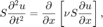
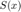
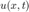
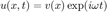
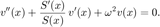
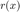
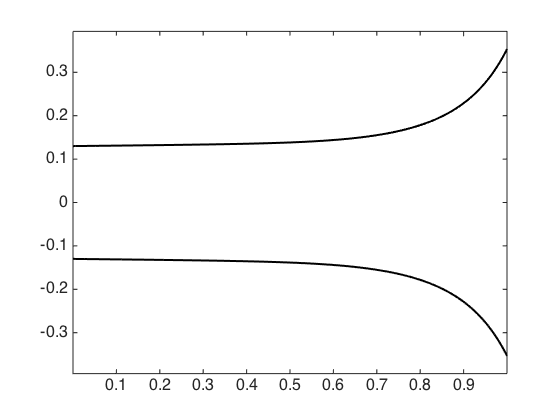
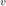
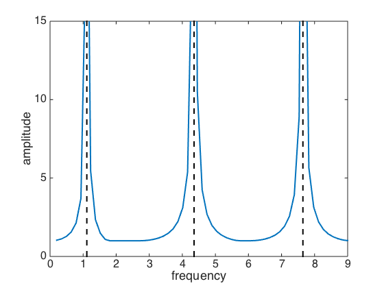
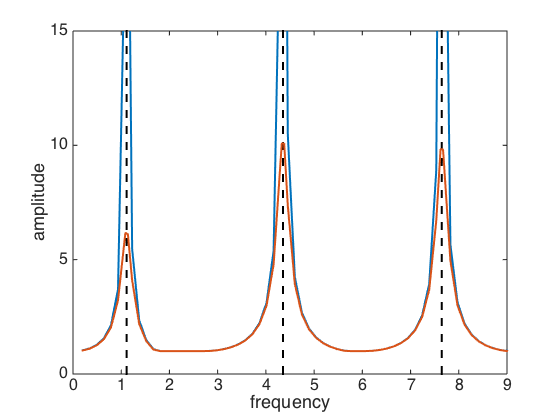

Webster's horn equation
Toby Driscoll, February 2016
Contents
(Chebfun example applics/WebsterHorn.m) [Tags: #ODE, #BVP, #waves]
Webster's horn equation (which was established mainly by Daniel Bernoulli and Euler, not Webster) is a simple model for sound vibrations inside a thin, rigid tube:

where  is cross-sectional area along the tube,  is the displacement of air, and is a physical constant. If we set and assume a harmonic solution in time, , then we arrive at the ODE

Let's assume an axisymmetric tube whose radius is , as given by
x = chebfun('x',[0,1]); r = 0.01*exp(x) + 0.12*exp(x.^6); plot([r,-r],'k'), axis equal S = pi*r.^2;
Eigenmodes
We can view the problem as the eigenvalues of the operator
A = chebop( @(u) diff(u,2) + diff(u)*diff(S)/S, [0,1] );
Let's choose some boundary conditions for the horn.
A.lbc = 'dirichlet'; A.rbc = 'neumann';
Now we solve the eigenvalue problem and find the resonant frequencies of the horn.
[V,Lam] = eigs(A,8,'sm');
lam = diag(Lam); om = sort(sqrt(-lam))
om =
1.1130
4.3548
7.6472
10.8536
14.0298
17.1926
20.3483
23.5000
We can also see the solutions for  at those resonances.
plot(V(:,end-3:end))

Each next-higher mode introduces a new bump in the solution curve.
Response amplitudes
We can solve Webster's equation at any frequency , not just the resonant ones.
omega = sort( [om'+0.025, om'-0.025, linspace(.2,9,61)] ); for k = 1:length(omega) ode = @(u) diff(u,2) + diff(u)*diff(S)/S + omega(k)^2*u; L = chebop(ode,[0,1],1,'neumann'); u = L\0; ampl(k) = sqrt( max(u.^2) ); end plot(omega,ampl,'-') hold on, plot([om';om'],[0;100],'k--') axis([0 9 0 15]) xlabel('frequency'), ylabel('amplitude')
In principle, the resonant peaks are unbounded. It's more physically realistic to introduce some damping into the solution by means of a complex frequency.
for k = 1:length(omega) freq = omega(k) + 0.1i; ode = @(u) diff(u,2) + diff(u)*diff(S)/S + freq^2*u; L = chebop(ode,[0,1],1,'neumann'); u = L\0; ampl(k) = sqrt( max( u.*conj(u) ) ); end plot(omega,ampl)
References
[1] E. Eisner, Complete solutions of the ?Webster? horn equation, J. Acoust. Soc. Amer. 41(4), 1126?1146, 1967.